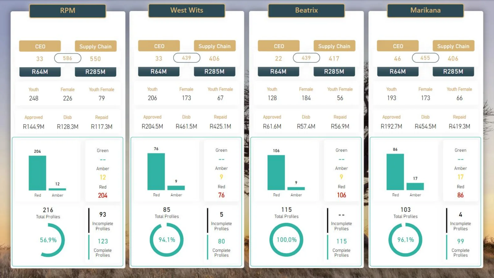
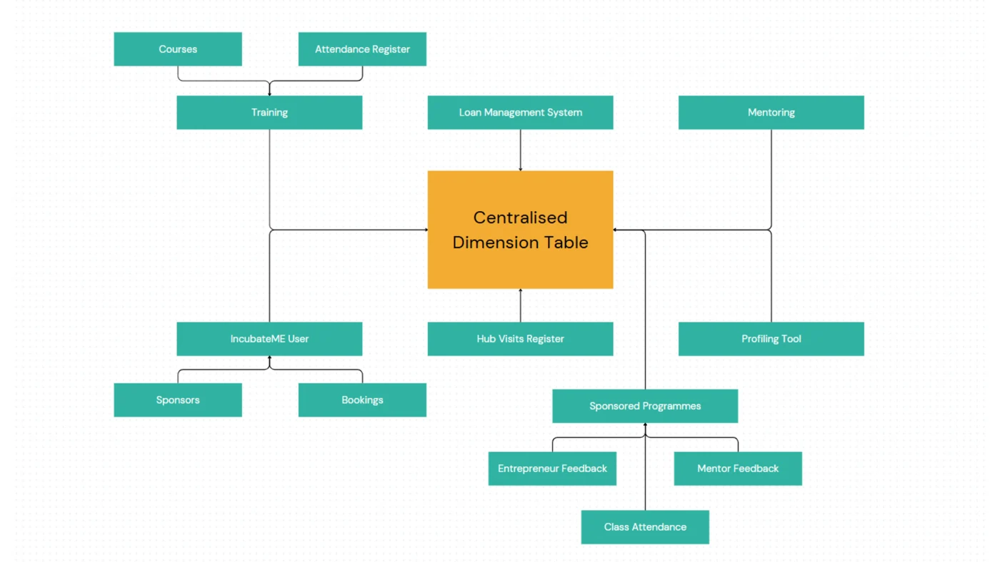

Analytics
SME Management Dashboard
Training, mentoring and lending activity come together in a Power BI dashboard for SME programme sponsors.

Context
The organization needed a unified reporting solution to track SME interactions across multiple platforms, including WordPress-based registrations, bookings, loan applications, and Dynamics 365 CRM, in order to provide clients with a complete and accurate view of SME participation across funded programs.
Objective
I took the initiative of designing and delivering a centralized data and integration architecture that consolidated SME data from WordPress, Training Department, ESD team, Dynamics 365, and the Loan Management System into a single reporting layer suitable for analytics and stakeholder reporting.
My contribution
I designed a centralized data model using a star schema with shared dimension tables, implemented webhook-driven data flows from WordPress into Dynamics 365, built Power Automate workflows to orchestrate and unify integrations across all platforms, and developed Power BI dashboards to track website activity, CRM interactions, and loan lifecycle events.
Outcome
The solution delivered a single source of truth for SME engagement data, improved reporting accuracy and transparency for sponsors, and enabled comprehensive visibility into SME training, funding, mentoring, and related activities, supporting data-driven decision-making and program impact reporting.
